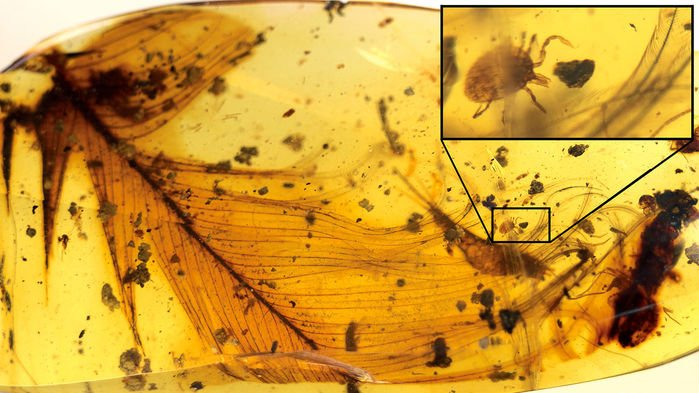
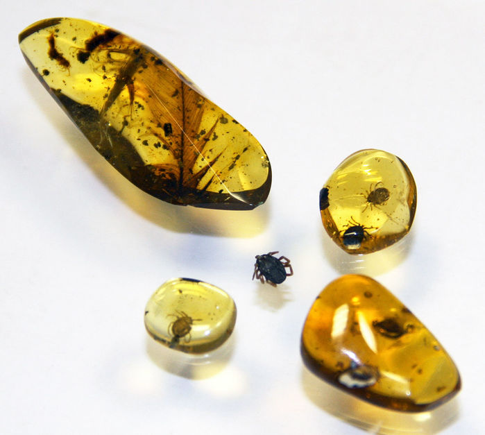

မြန်မာပြည် ဟူးကောင်းချိုင့်ဝှမ်းက ထွက်တဲ့ ဒီပယင်းကျောက် (Amber) ထဲမှာ တွေ့ရတဲ့ လှေးတွေဟာ ရှေးဒိုင်နိုဆောရဲ့ အမွှေးကို တွယ်လျက်သား တွေ့ရတာပါ။ ဒါဟာ လွန်ခဲ့တဲ့ အတိတ်ကာလက ဒီလှေးတွေ ဘာစားသုံးပြီး ဘယ်လိုအသက်ရှင်ခဲ့တယ် ဆိုတာ ပထမဆုံးဖော်ပြလိုက်တဲ့ တိကျတဲ့ သက်သေ အထောက်အထား ဖြစ်ပါတယ်။
ဒီလှေးကို ရှာဖွေတွေ့ရှိခဲ့တဲ့ သိပ္ပံပညာရှင် အဖွဲ့ရဲ့ အဖွဲ့ဝင် တစ်ဦးဖြစ်တဲ့ အောက်ဆဖို့တ် တက္ကသိုလ် သဘာဝသမိုင်းပြတိုက်က ရီကာဒို ပီယဲ ဖွန်တေးကတော့ ဒါဟာ သဘာဝသမိုင်း ပညာရှင်တွေအတွက် အိပ်မက် တစ်ခုပါပဲလို့ ကဗျာဆန်ဆန် ပြောသွားပါတယ်။
အခုတွေ့ရတဲ့ ပယင်းကျောက်မှာ လှေးတွေဟာ တချိန်က ဒိုင်နိုဆောတွေရဲ့ သွေးကို စုပ်ယူ စားသုံးပြီး အသက်ရှင်သန်ခဲ့တယ်ဆိုတာ ညွှန်ပြနေတဲ့ သဲလွန်စတွေ အများအပြား ပါဝင်ပါတယ်။ အထင်ရှားဆုံး တစ်ခုကတော့ ဒီလှေးဟာ ဒိုင်နိုဆောရဲ့ အတောင်မွှေးကို ဖက်တွယ်ထားတာပဲ ဖြစ်ပါတယ်။
အခုအတောင်မွှေးဟာ နောင်ငှက်တွေဖြစ်လာမယ့် ဒိုင်နိုဆောရဲ့ အတောင်ပံမွှေး ဖြစ်ပါတယ်။ နောက်သဲလွန်စကတော့ ဒိုင်နိုဆောရဲ့ အသိုက်ထဲမှာ နေထိုင်ခဲ့တဲ့ ချေးပိုးထိုးကောင် သားလောင်းရဲ့ အမွေးကို လှေးနှစ်ကောင် ကိုယ်ပေါ်မှာ ကပ်နေတာ တွေရတာပါ။

“လှေးတွေဟာ အခုမှ ငှက်တွေရဲ့ သွေးကို စုပ်ယူစားသုံးနေတာ မဟုတ်ပါဘူး။ ရှေးယခင်ကတဲက အခုခေတ်ငှက်တွေရဲ့ ဘိုးဘေးတွေကို သွေးစုပ်ခဲ့တာပါ” လို့ သူကဆက်ပြောပါတယ်။
အခုတွေ့ရှိချက်ကို ပြီးခဲ့တဲ့ ၂၀၁၇ ဒီဇင်ဘာလထုတ် Nature Communication သိပ္ပံဂျာနယ်မှာ ဖော်ပြခဲ့တာ ဖြစ်ပါတယ်။
ဒီလှေးတွေ တွေ့ရတဲ့ ပယင်းကျောက်ဟာ မြန်မာပြည် ဟူးကောင်ချိုင့်ဝှမ်းက နှစ် ၉၉ သန်း သက်တမ်းရှိတဲ့ ပယင်းကျောက်တွင်းက ထွက်ရှိတာ ဖြစ်ပါတယ်။ ပယင်းကျောက်ဖြစ်ရုပ်ကြွင်း စုဆောင်းသူ ဝါသနာရှင် တစ်ဦးက ပယင်းပွဲစားဆီမှာ တွေ့ရှိလို့ ဝယ်ယူခဲ့တာဖြစ်ပြီး ဒီ အောက်စဖို့ သဘာဝသမိုင်းပြတိုက်ကို လှူဒါန်းခဲ့တာ ဖြစ်ပါတယ်။
တွေ့ရတဲ့ လှေးတွေထဲက တစ်ကောင်ဟာ ၅ မီလီမီတာလောက် ရှိပြီး သွေးတွေနဲ့ ဖောင်းကားနေပါတယ်။
မူလကတော့ ပညာရှင်တွေက ဒီလှေးကနေ ဒိုင်နိုဆော DNA ထုတ်လို့ ရနိုင်မယ်လို့ မျှော်လင့်ခဲ့ ကြပါတယ်။ ဒါပေမယ့် လက်တွေ့မှာတော့ ဒိုင်နိုဆောရဲ့ မူလ DNA က ပျက်စီးနေပြီဖြစ်လို့ လှေးတွေကိုပဲ အသေးစိတ် လေ့လာခွင့် ရခဲ့ကြပါတယ်။
အခုတွေ့ရတဲ့ လှေးဟာ အရင်က မတွေ့ဘူးသေးတဲ့ မျိုးစိတ်သစ် တစ်ခုဖြစ်ပြီး သိပ္ပံအမည် Deinocroton draculi လို့ အမည်ပေးထားပါတယ်။ မြန်မာလိုတော့ “ဒရက်ကူလာရဲ့ ကြောက်စရာ လှေး” လို့ အဓိပ္ပါယ် ရပါတယ်။
